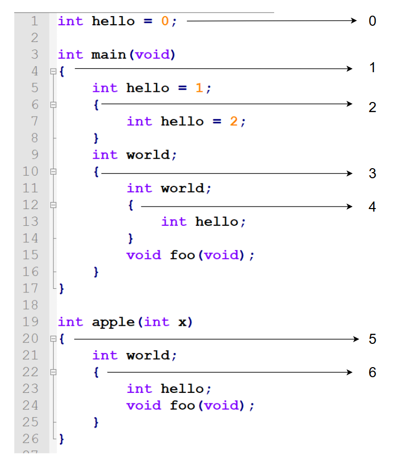
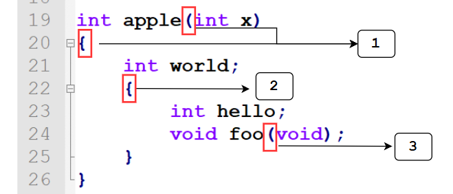
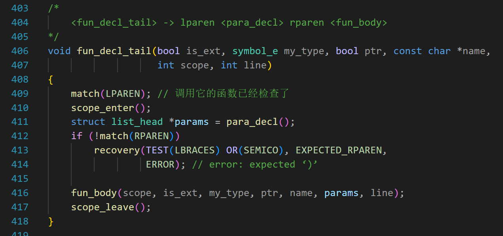
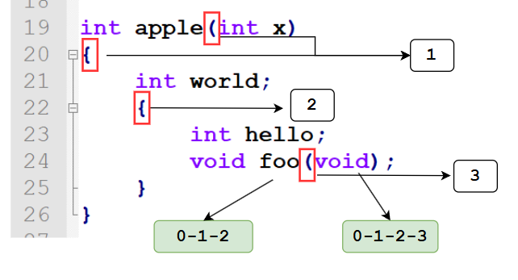
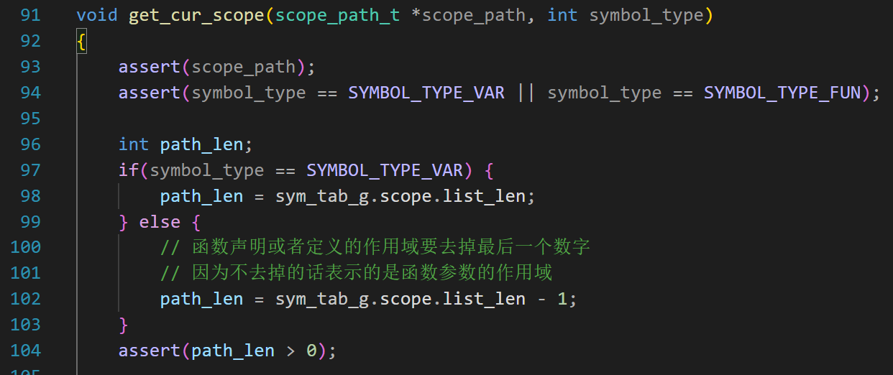
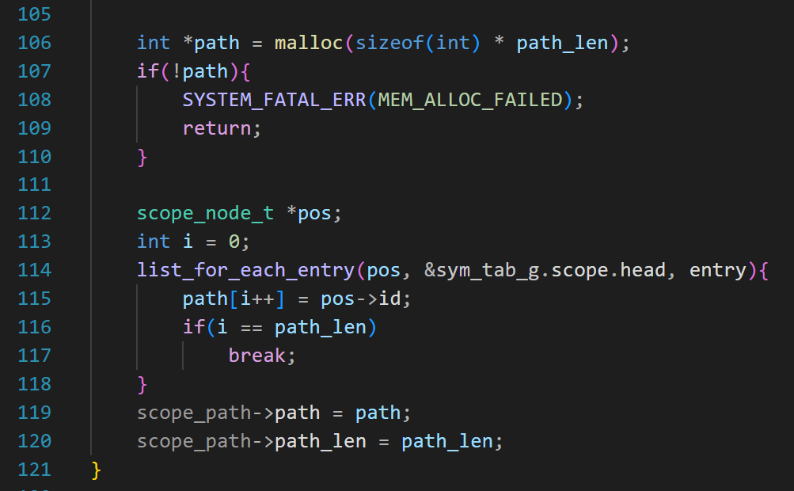
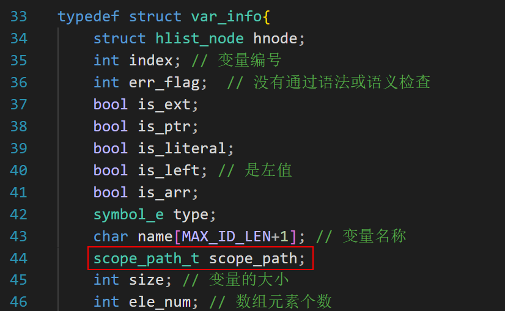

第9天：作用域管理
第9天：作用域管理
为了语义分析，我们要做符号表管理。符号表管理又离不开作用域管理，所以我们先要解决作用域的问题。
举个简单的例子：
1 | |
上面的代码一共定义了 3 个 hello, 它们属于不同的作用域。
我们的符号表，要把这 3 个 hello 都保存起来。如果区别它们的作用域呢？
第一行的 hello 具有文件作用域，第 4 行的 hello，因为被一对大括号包裹，就和外面的 hello 不是一个变量了；
同理，第 6 行的 hello 又被一对大括号包裹住，它又成为了一个新的变量。
我们可以给大括号编号，每对大括号都有一个独一无二的编号。想象从文件作用域进入一个左大括号，再进入一个左大括号，…，直至遇到某个变量，把这些大括号的编号连起来就构成了一个数字序列，这个数字序列就表示这个变量的作用域。
如下图所示，文件作用域是 0；每遇到一个左大括号，编号就增加1；右大括号不用管。
当给大括号编号完成后，就可以表示变量或者函数声明的作用域了。
例如第 5 行的 hello，它在 1 这个括号里面，所以它的作用域是 0/1
再比如第 7 行的 hello,从最外面到达它需要穿越括号 1 和括号 2，所以它的作用域是 0/1/2
再看看第 24 行的函数声明 foo,从最外面到达它需要穿越括号 5 和括号 6，所以它的作用域是 0/5/6

不过有个问题。请看下面的代码：
1 | |
请问参数 a 和 b 的作用域是什么？
显然它们的作用域在大括号里面。所以，遇到函数定义，应该把左小括号和左大括号一起编号。
对于函数声明，又怎么处理呢？
1 | |
显然第 5 行的声明中的 a 和 b 和第 3、4 行的 a 和 b 是不同的变量。
所以，遇到函数声明，要把左小括号编号。

接下来的内容比较烧脑，请读者集中注意力。
为了跟踪当前解析的代码属于哪个作用域，我们需要栈这种数据结构，还需要一个变量（假设名字叫 scope_id）用来表示括号的值递增到哪里了。
初始状态，scope_id = 0，表示全局作用域。编译器做初始化工作，把 0 入栈。
假设这时候编译器在解析全局变量，那么这些全局变量的作用域就是 0；
然后，遇到上面第 19 行的左小括号（正在执行 fun_decl_tail() 函数），scope_id 增加 1，变成 1，把 1 入栈；
继续分析代码，遇到了函数的参数 x，它的作用域是多少？去栈里面看，是 0-1
遇到了 x 右边的右小括号，这时候多看一个符号，发现是“{”，所以这不是函数声明，是函数定义，那么要忽略这个右小括号；
又遇到了第 20 行的左大括号，这个不用管，因为 1 已经入栈了。
又遇到了第 21 行的 world，它的作用域是多少？ 去栈里面看，是 0-1
又遇到了第 22 行的左大括号，scope_id 增加 1，变成 2，把 2 入栈；
遇到了第 23 行的 hello，它的作用域是多少？ 去栈里面看，是 0-1-2
遇到了 foo 函数的左小括号，scope_id 增加 1，变成 3，把 3入栈；
遇到了 foo 函数的右小括号，这时候多看一个符号，发现是分号，编译器得知声明结束了。注意，这时候要出栈，把 3 出栈；
假设又遇到了某个变量（图中没有，请读者想象一下），此时它的作用域是 0-1-2，和第 23 行的 hello 一样；
继续解析，遇到了第 25 行的右大括号，注意，这时候要出栈，把 2 出栈。
继续解析，遇到了第 26 行的右大括号，编译器得知函数定义结束了。这时候要出栈，把 1 出栈。
此时，又回到了全局作用域，因为栈里面只有 0 了。
总结一下：
初始状态，scope_id = 0，把 0 入栈，表示全局作用域；
遇到函数名字后面的左小括号，scope_id 增加 1； 把 scope_id 入栈；
每当遇到一个左大括号就把 scope_id 增加 1； 把 scope_id 入栈；
每当遇到一个右大括号就出栈一个数；
如果是函数定义，则忽略参数列表最右边的小括号和最外层的一对大括号；如果是函数声明，忽略参数列表最右边的小括号；
当函数声明结束或者定义结束的时候，也要出栈一个数；
在整个代码的分析过程中，这个栈是动态变化的。只要读取栈中的数据（从栈底到栈顶），就可以获得当前符号的作用域。
讲了这么多原理，下来该代码实现了。
我们已经学了链表，就不用再手写栈了。可以把链表当成栈使用，只操作链表的尾巴。入栈就用 list_add_tail ，出栈就根据头节点找到最后一个节点，然后把它删除。读取栈中的数据也不难，从头到尾遍历链表。
基本数据结构介绍
首先，看 sym_table_t 这个结构体
1 | |
sym_table_t 这里面有很多东西，但是这节课只用看第 6~10 行定义的 scope_info_t scope;
第 7 行 scope_id 和前文中的含义一样，用来表示大括号的值递增到哪里了。
第 8 行是链表的头节点；
第 9 行把链表的长度记录下来，方便快速获得链表的长度。
第 12 行，定义 sym_table_t 类型的全局变量 sym_tab_g；
链表有了，用户节点呢？
1 | |
很简单，一个 struct list_head 结构，一个 id， 这个 id 可以看成是大括号的编号。
作用域的初始化
1 | |
第 3 行，把结构体 sym_tab_g 的所有字段都清零。于是 sym_tab_g.scope.scope_id 等于 0；sym_tab_g.scope.list_len 也等于 0；
第 4 行，初始化链表，此时链表是空的。
sym_tab_g.scope.scope_id 等于 0；
进入作用域
第 5 行的代码是：
1 | |
每次进入新的作用域，都会调用这个函数。
分配内存就不多说了。第 9 行，获取编号，注意，先返回sym_tab_g.scope.scope_id 的值，然后 sym_tab_g.scope.scope_id 再增加 1
第 10 行，把节点插入到链表的末尾，相当于入栈。
第 11 行，因为插入了一个节点，链表长度增加 1
有进入作用域就有退出作用域，其实这两个函数是成对使用的。
退出作用域
1 | |
第 6 行，sym_tab_g.scope.head.prev 表示链表最后一个节点的 struct list_head entry 的地址（头节点的前面那个，因为是循环链表，所以就是最后一个）
然后利用 container_of 宏得到用户节点的地址，也就是 last_node
第 7 行，删除这个节点，相当于出栈。
第 8 行，别忘了释放内存
第 9 行，链表长度减去 1
获得作用域
比如代码某个地方定义了一个变量，当我们记录这个变量到符号表的时候，也要保存它的作用域，这时候需要获得作用域，其实就是读取此时栈中的数据。
栈中的数据构成了作用域路径，我们用数组来存储变量或者函数声明所在的作用域。
1 | |
第 2 行的 path 是一个指针，根据栈中数据的个数为其分配内存。
第 3 行的 path_len 记录数组长度。
1 | |
get_cur_scope 这个函数要 2 个参数，参数 1 是 scope_path_t 类型的指针，这是个输出型参数，参数 2 是一个宏，只有两种取值，一个是 SYMBOL_TYPE_VAR，用于获得变量的作用域，另一个是 SYMBOL_TYPE_FUN，用于获得函数声明或者定义的作用域。
这两种情况有何区别呢？

请看上面的代码，第 410 行，当遇到左小括号的时候，调用 scope_enter();
第 411 行是函数参数的解析。
第 416 行是 fun_body 函数。它会调用 new_fun()，此函数下节课讲，总之现在知道这是创建函数符号的操作就可以了。
在创建函数符号的时候，会记录此函数的作用域；如果是定义，其作用域肯定是 0，如果是声明，那就根据实际情况。
但是问题来了，执行完第 410 行后，此时是函数参数所在的作用域。
执行 416 行的时候，依然在这个作用域里面。所以 new_fun()里面获取的也是这个作用域。

用这张图来解释，第 24 行是 foo(void)
当解析到它的参数的时候，当前作用域已经是 0-1-2-3 了
但是我们创建 foo 这个函数符号的时候，需要的是本声明的作用域，应该是 0-1-2，也就是说和第 23 行的 hello 是同一个作用域
也就是说要把当前的作用域修正一下，去掉最后一个数字。
如果是获取变量的作用域，不用修正；如果是函数定义或者声明，就需要修正。

所以才有代码 102，如果是函数就把链表长度减一。

剩下的代码就比较简单了。
第 106 行，根据实际长度分配数组的内存
第 114 行遍历链表，把每个节点的编号记录到数组里面。一旦长度攒够，就 break
最后两行填写数组的地址和长度。
为了把变量和函数加入符号表，我设计了结构体 struct var_info 来保存变量符号；如下图，scope_path 这个字段用来记录变量所在的作用域。同理，函数符号也有这个字段。当需要获取变量或者函数的作用域的时候，就把这个字段的地址和符号类型（变量/函数）传递给 get_cur_scope 函数，get_cur_scope 函数会根据栈的内容填好作用域。

本文内容到这里就结束了。等把后面的两节内容讲完（符号表和语义分析），会一并上传代码。